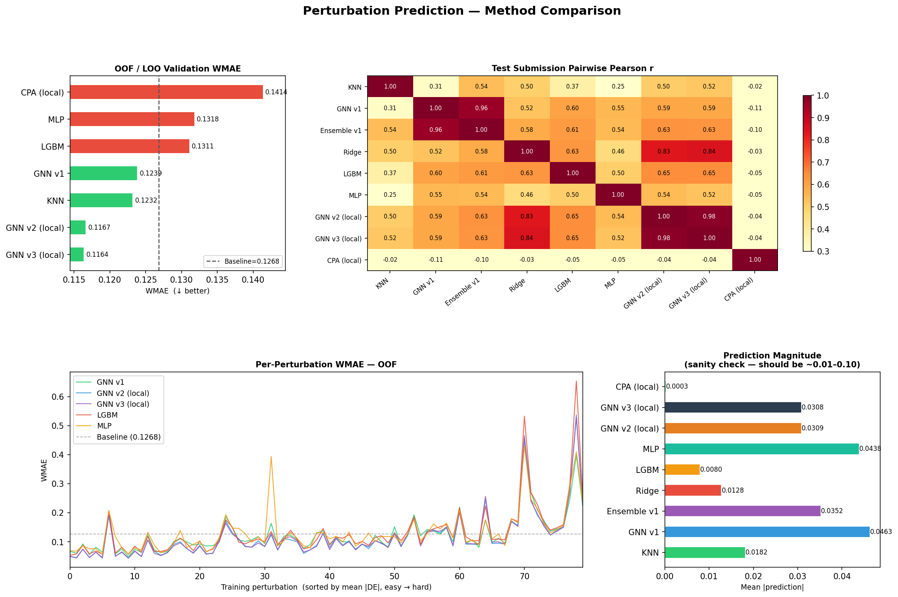
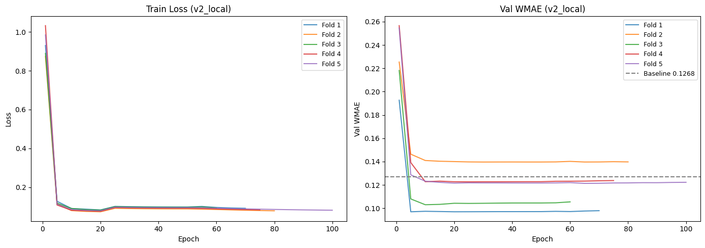
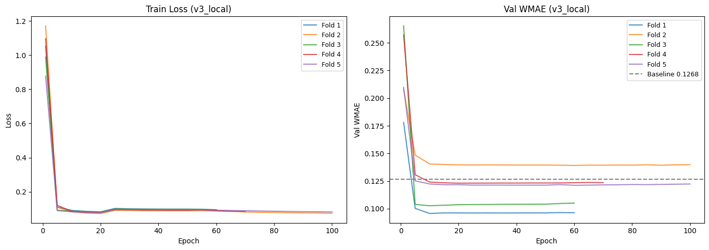

Kaggle Competition — Echoes of Silenced Genes
Zero-shot CRISPR Perturbation Effect Prediction using Graph Neural Networks. Given a gene knockdown identity never seen during training, predict differential expression for all 5,127 measured genes.
Section 1
Predict the transcriptomic consequence of knocking down a gene — using only the identity of that gene, with no cell-level observations at test time. This is a true zero-shot generalisation challenge.
Given a CRISPR knockdown perturbation identity (gene name only), predict the differential expression vector across 5,127 genes. Test perturbations are completely unseen during training — there are no "seen" perturbation embeddings to look up.
| Split | Perturbations | Purpose |
|---|---|---|
| Training | 80 genes | Fit model + CV |
| Validation | 60 genes | LB score |
| Test | 60 genes | Final score |
| Total cells | 17,882 cells × 19,226 genes | |
Section 2
The graph encodes multiple layers of biological knowledge. Each node is a gene. Edges encode protein-protein interactions, co-expression correlations, and directed transcription factor regulatory relationships.
| Feature Group | Method | Dim |
|---|---|---|
| Expression Stats | mean, log1p_mean, var, dispersion, detect_rate on control cells | 5D |
| Co-expression PCA | TruncatedSVD on control cell expression matrix (cells × genes) | 50D |
| GO Term Embedding | TruncatedSVD on gene × GO binary annotation matrix | 64D |
| Total Input | Projected to 128D via Linear + LayerNorm | 119D → 128D |
| Nodes | 5,155 genes |
| Total edges (v2) | ~49,270 |
| Total edges (v3) | ~219,270 (+ TF edges) |
| STRING PPI threshold | score ≥ 700 |
| Co-expression threshold | |Pearson r| ≥ 0.4, top-20 per gene |
| TF regulatory source (v3) | DoRothEA A+B / TRRUST v2 |
| TF pairs (v3) | ~170K (activating + repressing) |
Section 3
Seven distinct approaches were implemented and evaluated. Lower WMAE is better. The baseline is the mean DE vector applied to all test perturbations.
| Rank | Method | WMAE | vs Baseline | WMAE Bar | Notes |
|---|---|---|---|---|---|
| 1 | GNN v2 | 0.1167 | −7.9% | Gene programs, curriculum loss, MCDropout | |
| 2 | KNN | 0.1232 | −2.8% | STRING feature similarity, k=5 | |
| 3 | GNN v1 | 0.1239 | −2.3% | GAT, direct 5127D output, no gene programs | |
| 4 | Baseline | 0.1268 | 0.0% | Mean DE vector for all perts | |
| 5 | LightGBM | 0.1311 | +3.4% | Pairwise tree, 410K rows | |
| 6 | Pairwise MLP | 0.1318 | +3.9% | Pairwise deep MLP, [x_pert ⊙ x_target] | |
| 7 | CPA | 0.1414 | +11.5% | Cell-level VAE, latent=32 | |
| — | GNN v3 | 0.1164 | −8.2% | TransformerConv + TF edges — NEW BEST |
Finds the k=5 most similar genes in STRING feature space and averages their DE profiles as the prediction. No training required — purely retrieval-based using pre-computed 119D node features.
| Parameter | Value |
|---|---|
| k | 5 neighbours |
| STRING threshold | score ≥ 400 |
| Feature dim | 119D node features |
| Distance metric | Cosine similarity |
Pairwise formulation: for each (pert, target-gene) pair, constructs a feature vector [x_pert, x_target] and trains a Ridge regressor to predict DE. Separate model per target gene (5127 models) or one global.
| Parameter | Value |
|---|---|
| Regularisation α | 10.0 |
| Input | [x_pert, x_target] ∈ ℝ^238 |
| OOF saved | No |
Gradient-boosted trees on 410K pairwise training rows. Each row: [x_pert (119D), x_target (119D)] → DE scalar. Trained separately per gene or with gene-ID features included.
| Parameter | Value |
|---|---|
| n_estimators | 300 |
| max_depth | 5 |
| Training rows | ~410K (80 × 5127) |
| Feature dim | 238D pairwise |
Deep MLP operating on concatenated + element-wise product of pert and target features: [x_pert ‖ x_target ‖ x_pert⊙x_target] → 357D input. Learns non-linear interactions but still pairwise-only.
| Parameter | Value |
|---|---|
| Input dim | 357D (119×3) |
| Hidden layers | [512, 256] |
| Epochs | 50 |
| Activation | GELU |
VAE operating at the cell level with an additive perturbation embedding. Maps each cell to latent space and models perturbation as a learned vector addition. Closest to the original CPA paper.
| Parameter | Value |
|---|---|
| Latent dim | 32 |
| Architecture | Cell-level VAE |
| Pert representation | Learned embedding |
First GNN: 2-stage GAT architecture with direct 5127D output head. Context encoder stage followed by perturbation propagation stage. 5-fold cross-validation. No gene programs or curriculum loss.
| Parameter | Value |
|---|---|
| Architecture | 2-stage GAT |
| Output head | Direct 5127D linear |
| CV folds | 5 |
| DropEdge | p=0.1 |
Key upgrades over v1: Gene Programs (SVD K=64) reduce output from 5127→64D, curriculum loss (Huber→MAE), MCDropout TTA ×30, gated decoder head, raw feature residual skip connection.
| Parameter | Value |
|---|---|
| Gene programs K | 64 SVD components |
| Curriculum loss | Huber (ep 1–20) → MAE (ep 21+) |
| MCDropout TTA | 5 folds × 30 passes = 150 |
| Gated decoder | σ(linear(h_pert)) ∈ [0,1] |
| DropEdge | p=0.1 per batch |
TransformerConv replaces GATConv, EdgeEncoder projects edge features to 32D, directed TF regulatory edges added, GlobalContextLayer captures long-range dependencies in O(N).
| Parameter | Value |
|---|---|
| Attention | TransformerConv (Q·K/√d) |
| Edge features | EdgeEncoder → 32D |
| Edge types | 3 (STRING, CoExp, TF) |
| Global context | O(N) mean-pool gate |
| TF source | DoRothEA A+B |
Section 4
Previous best model. WMAE 0.1167 vs baseline 0.1268 — a 7.9% improvement. Five key innovations stacked on the v1 two-stage GAT architecture.
All gene nodes exchange information through graph attention. Builds rich contextual representations of each gene's neighbourhood.
The perturbed gene's representation is projected to a signal vector and broadcast to all nodes before a second round of attention.
Instead of predicting all 5,127 DE values directly, the model predicts 64 "gene program scores" (W), then decodes via a fixed SVD basis matrix (H) derived from the training data.
Section 5 — New
The next-generation model. TransformerConv replaces additive GAT attention, edge features are encoded into rich 32D vectors, directed transcription factor regulatory edges are added, and a global context layer captures long-range gene interactions.
| Component | GNN v2 | GNN v3 |
|---|---|---|
| Attention mechanism | GATConv — additive attention α = softmax(LeakyReLU(a·[Wh_i ‖ Wh_j])) |
TransformerConv — dot-product Q·K/√d Richer gradient signal, edge-feature-aware |
| Edge features | Scalar weight (1D) only | [weight, type] → EdgeEncoder → 32D Differentiates PPI vs co-exp vs TF edges |
| Edge types | 2 (STRING PPI, co-expression) | 3 (+TF regulatory, directed) Activating vs. repressing TF→target |
| Long-range context | None — local message passing only | GlobalContextLayer — O(N) mean-pool gate Propagates TF effects to all targets |
| Skip connection | Manual residual_proj (fixed) | Learnable β scalar in TransformerConv β·h_in + (1-β)·agg — data-driven interpolation |
| TF regulatory info | Not used | DoRothEA A+B (~170K TF-target pairs) Directed, signed (activating/repressing) |
| Gene programs | SVD K=64 (retained) | SVD K=64 (retained) |
| Curriculum loss | Huber→MAE (retained) | Huber→MAE (retained) |
| MCDropout TTA | ×30 passes (retained) | ×30 passes (retained) |
Graph Attention Networks (GATv1) use an additive attention mechanism that concatenates node features and passes them through a learned vector. TransformerConv uses scaled dot-product attention — the same mechanism behind the Transformer architecture — but applied to graph message passing. This produces richer, better-calibrated attention scores.
Transcription factors (TFs) are master regulators of gene expression. When a TF is knocked out, its target genes lose their regulatory signal — causing a cascade of differential expression changes. This causal biology is not captured by undirected co-expression or PPI edges, which only encode correlation. Directed TF→target edges encode the actual regulatory mechanism.
| Edge Type | Type ID | Direction | Source | Approx. Count |
|---|---|---|---|---|
| STRING PPI | 0 | Undirected | STRING DB score ≥ 700 | ~30,000 |
| Co-expression | 0 | Undirected | Pearson |r| ≥ 0.4, top-20/gene | ~19,270 |
| TF Activating | 1 | TF → Target (directed) | DoRothEA A+B confidence | ~100,000 |
| TF Repressing | 2 | TF → Target (directed) | DoRothEA A+B confidence | ~70,000 |
| Total edges (v3) | ~219,270 | |||
The EdgeEncoder converts raw edge attributes (a scalar score and an integer type) into a rich 32D vector that participates in both the attention score computation and the value aggregation. It is computed once per forward pass after DropEdge, then shared across all perturbation samples in the batch — maximally efficient.
Standard GNN message passing is local — information propagates one hop per layer. With L=3 layers, a gene can only receive information from genes within 3 graph hops. Many TF regulatory effects span longer paths, especially for master regulators with broad influence (e.g., TP53, MYC). The GlobalContextLayer provides an O(N) approximation to full self-attention that allows every gene to be influenced by a summary of the entire graph state.
Full self-attention computes pairwise scores between all N=5,155 gene nodes — a 5,155² ≈ 26.6M attention matrix. The GlobalContextLayer instead computes a single graph-level summary via mean pooling (O(N)), then gates each node's contribution from that summary. This is analogous to the "register tokens" in Vision Transformers or the global node trick in graph transformers.
Master TFs like TP53 and MYC regulate hundreds of genes across the genome. Their effect is not local to a graph neighbourhood — it is global. When TP53 is knocked out, the global expression state changes in a way that affects every gene. The GlobalContextLayer captures this: the summary vector h_global encodes the "expression state" and gates each gene's response to it.
outputs/figures/training_curves_v3_local.png.
Section 6
Figures generated by compare_methods.py and stored in outputs/figures/. Training curves show per-fold loss evolution.

Figure: method_comparison.png
Figure: training_curves_v2_local.png
Figure: training_curves_v3_local.pngSection 7
Models with low prediction correlation are complementary for ensembling. GNN v2 captures graph topology while KNN and Ridge capture feature similarity — blending them reduces the unique errors of each approach.
Weights w1..w4 are optimised by minimising OOF WMAE using Optuna Bayesian optimisation or a simple grid search. Constraint: Σw_i = 1, w_i ≥ 0. Out-of-fold predictions from 5-fold CV are used as the target for weight fitting.
| Model | Strength | Weakness |
|---|---|---|
| GNN v2 | Graph topology, gene programs, MCDropout | May miss simple feature-similarity cases |
| GNN v3 ✓ BEST | TF causal edges, richer attention | Higher variance, more parameters |
| KNN | Non-parametric, no overfitting | Ignores graph structure, k=5 limit |
| Ridge | Fast, stable, linear baseline | Cannot capture non-linear interactions |